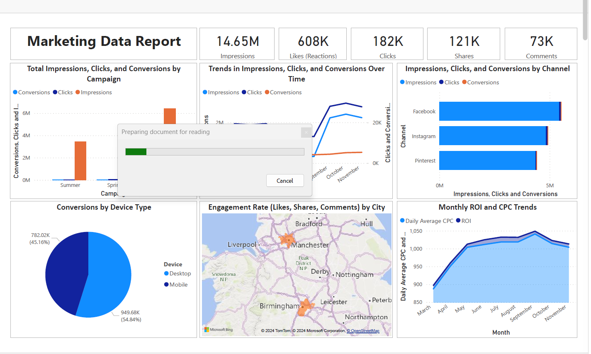

Overview
This practice case study uses a dataset provided to students. It contains 9,900 rows and 18 columns covering March to November 2023, with campaign, city, device, channel, and ad information. Currency values are in GBP. The data checks found no nulls and no duplicate rows.
- Period
- March–November 2023
- Dataset
- 9,900 rows · 18 columns
- Currency
- GBP (£)
Business problem
Marketing performance varies across channels, campaigns, cities, devices, ads, and time. The analysis looks at where spend returned value, where conversions were more common, and which ads or periods attracted activity, so future decisions can be based on observed results.
Objective
Compare the available marketing measures across the dataset’s main groupings and summarize findings that can inform cautious tests of channel, city, and creative strategy.
Approach
- Imported the dataset into MySQL, renamed columns for consistency, and corrected data types.
- Used SQL for exploratory analysis across campaign, channel, city, device, ad, and time groupings.
- Built Power BI visuals to compare conversion rate by city, spend against conversion value, and trends over time.
Tools
Findings
Channel return and value
Pinterest had the best return, while Instagram generated the highest total conversion value.
| Channel | Spend | Conversion value | ROI |
|---|---|---|---|
| £28,201 | £634,713.80 | 2,150.7% | |
| £63,395 | £684,760.68 | 980.1% | |
| £71,585 | £412,225.78 | 475.9% |
City and device conversion rates
- Birmingham had the highest city conversion rate (0.32%), followed by Manchester (0.29%) and London (0.23%).
- Desktop conversion rate was 0.37%, compared with 0.21% for mobile.
Ad and monthly patterns
- Collection Ad had more impressions (7.93M) and clicks (105,960) than Discount Ad (6.72M impressions and 75,638 clicks). Discount Ad had more conversions (21,183 versus 19,069).
- November had the most conversions (5,331). October had higher impressions and clicks.
The campaign, device, and ad groupings each total 40,252 conversions.
Recommendations
- Test shifting a portion of budget toward higher-ROI channels such as Pinterest, while tracking both return and total conversion value.
- Review Collection Ad creative or messaging: it drew more impressions and clicks, while Discount Ad recorded more conversions. Compare any revised creative before making a larger change.
- Use the city and monthly patterns to guide further campaign tests, then continue monitoring results over time.
These are test ideas based on the observed data, not forecasts of future gains.
Evidence
- Marketing Data Analysis project repository Project files and background
- Marketing_data.sql SQL queries
- Marketing Data.pdf PDF report
- Marketing Data.pbix Power BI file
Dashboard screenshot
